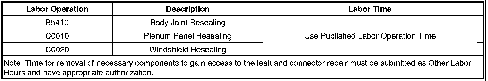
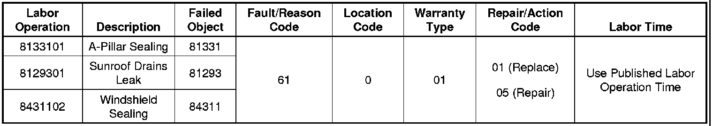

Electrical - Intermittent MIL/DTC P2138/Reduced Power
TECHNICALBulletin No.: 07-06-04-019D
Date: June 28, 2010
Subject: Intermittent Malfunction Indicator Lamp (MIL) Illuminated, DTC P2138 with Reduced Engine Power (Repair Instrument Panel (IP) to Body Harness Connector)
Models:
2005-2011 GM Passenger Cars and Light Duty Trucks (Including Saturn)
2005-2009 HUMMER H2
2006-2010 HUMMER H3
2005-2009 Saab 9-7X
Supercede:
This bulletin is being revised to update the model years and warranty information. Please discard Corporate Bulletin Number 07-06-04-019C (Section 06 - Engine/Propulsion System)
Condition
- Some customers may comment on an intermittent malfunction indicator lamp (MIL) being Illuminated with a message or an indicator that displays Reduced Engine Power.
- The technician may observe on a scan tool DTC P2138 - Accelerator Pedal Position (APP) Sensor 1-2 Correlation set as Current or in History.
Cause
This condition may be caused by water intrusion into the instrument panel (IP) to body harness connector, which carries the APP sensor signals to the ECM/PCM. This water intrusion results in a voltage difference between APP Sensor 1 and APP Sensor 2 that exceeds a predetermined value for more than a calibrated period of time, setting P2138.
Correction
Note
Aftermarket equipment can generate DTC P2138 and/or other DTCs.
1. Verify that aftermarket equipment is not electrically connected to any of the APP sensor signal or low reference circuits or to any other ECM/PCM 5V reference or low reference circuits. Refer to Checking Aftermarket Accessories in SI.
2. Perform the Diagnostic System Check - Vehicle.
• If any 5V reference DTCs are set, refer to Diagnostic Trouble Code (DTC) List - Vehicle.
• If any 5V reference DTCs are not set, proceed to Step 3.
3. Locate the IP to body harness connector, which may be located in and around the left hand kick panel area or inside the IP. Depending on the vehicle and model year, refer to Wiring Systems or Power and Signal Distribution in SI.
Note
Some examples of potential water leaks are: A-pillar seals, sunroof drain lines (if equipped) and windshield/cowl sealing.
4. Inspect for a water leak in the area. If necessary use a water hose to determine the source of the leak. Refer to General Information > Water Leaks in SI.
• If a water leak is observed, repair as necessary. Verify the effectiveness of the repair.
5. Inspect the IP to body harness connector terminals for corrosion and debris. Refer to Testing for Intermittent Conditions and Poor Connections in SI.
• If any corrosion and/or debris is observed, repair as necessary.
6. After completing the repair, verify the proper operation of the system. Depending on the vehicle and model year, perform the Diagnostic Repair Verification procedure or refer to Diagnostic Trouble Code (DTC) List - Vehicle in SI.
Warranty Information (excluding Saab U.S. Models)
For vehicles repaired under warranty, use the appropriate labor operation for the source of the water leak

Warranty Information (Saab U.S. Models)

For vehicles repaired under warranty, use the table.

Disclaimer